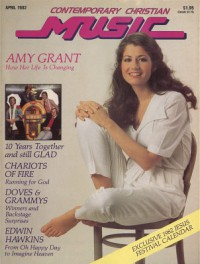
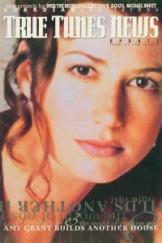
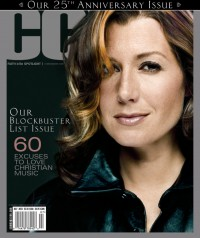
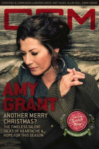

Amy Grant
|  April 1982 Contemporary Christian Music |
 May 1984 Christian Herald |
 May 1994 CCM |
 Fall 1994 True Tunes News |
 2000 CCM Brasil |
 July 2003 CCM |
 April 2010 CCM Digital |
 April 2013 CCM Digital |
 15 December 2016 CCM Digital |
Media coverage:
- Jun 1979 in Contemporary Christian Music "Amy Grant"
- Apr 1981 in Contemporary Christian Music "Amy Grant"
- Jun 1981 in Christian Life "Reaching Out", by Don Cusic
- Sep 1981 in Christian Herald "Amy Grant's Musical Mystique", by Twila Knaack
- Win 1981 in Today's Christian Woman "Amy and Gloria Grant: A Mother / Daughter Love Story", by Dale Hanson Bourke
- Dec 1981 in Charisma "News: Combining Talents In Marriage"
- Jan 1982 in Campus Life "Full Circle", by Amy Grant, Jim Long
- Apr 1982 in Contemporary Christian Music "Cover Feature: A Woman's Perspective", by Carolyn A. Burns
- Jul 1982 in Charisma "Charisma Music's Top 100"
- Jul 1982 in Campus Life "Impressions: Amy Grant"
- May 1983 in Contemporary Christian Music "Concert Review: Seattle, Washington, March 17"
- May 1983 in Christian Life "People & Events: Amy Grant Sweeps Up First Grammy"
- Sep 1983 in MusicLine "'Ageless Meledy' Single Spurs Sales of Age to Age LP"
- Jan 1984 in MusicLine "Gold for Amy Grant"
- Mar 1984 in Contemporary Christian Magazine "Amy Grant"
- May 1984 in Christian Herald "Amy Grant: Behind The Scenes", by Audrey T. Hingley
- May 1984 in Contemporary Christian Magazine "Concerts: Amy Grant"
- Oct 1984 in The Wittenburg Door "The Other Door Interview"
- Dec 1984 in Campus Life "Expressions: Beyond Gold", by Jim Long
- Jan 1985 in Campus Life "In Their Own Words: Amy Grant"
- 3 Apr 1985 in The Lutheran "Sight and Sound: Christian Musicians are 'Crossing Over'", by Steve Rabey
- Aug 1985 in Contemporary Christian Magazine "Unguarded Moments?", by Ted Ojarovsky
- Sep 1985 in Contemporary Christian Magazine "People & Places: The Amy & Gary Show"
- Nov 1985 in Eternity "Gallery: The Big Time", by Dr. Richard J. Stainslaw
- 8 Nov 1985 in Christianity Today "News: Christian Singer Appeals to Fans of Secular Pop Music", by Steve Rabey
- Dec 1985 in HIS "Scene & Heard: The Packaging of Amy Grant", by Diana Lynne Pavlac, Ross Pavlac
- Dec 1985 in Eternity "Holy Hype: Marketing The Gospel in the '80s", by David Hazard
- Jan 1986 in Campus Life "Expressions: The Year of the Leopard-Print Coat", by Jim Long
- Feb 1986 in Charisma "Christians Excel With New Art Form"
- Feb 1986 in Fundamentalist Journal "Rock Music: Cadence of the Decade: In the Christian Rock Sound... Can You Hear God Whisper?", by Michael R. Smith
- Apr 1986 in Religious Broadcasting "Amy Grant Answers Her Critics", by Liz Gilland
- May 1986 in Campus Life "Expressions: The Hooters, The Alan Parsons Project, Amy Grant", by Jim Long
- Jul 1986 in Contemporary Christian Magazine "Amy Grant Interview", by John W. Styll
- Jul 1986 in Charisma "How The Word Is A Light To Her Path", by Steve Lawson
- Jul 1986 in Contemporary Christian Magazine "A Collection of Memories", by John W. Styll
- Nov 1986 in CCM "In Concert: Wolf Trap, Vienna, VA", by Wade Thompson
- Mar 1987 in Campus Life "Amy! (Sorta)", by Jim Long
- May 1987 in Christian Herald "A Parent's Guide To Contemporary Christian Music", by Audrey T. Hingley
- Oct 1987 in CCM "John Fischer: An Editorial", by John Fischer
- Jan 1988 in CCM "Toys in the Band: Amy Grant"
- May 1988 in CCM "Gary Chapman", by Walt Quinn
- Jun 1988 in Charisma & Christian Life "Amy Grant & Gary Chapman: Harmony At Home", by Steve Lawson
- Jul 1988 in Campus Life "Expressions: Amy Grant", by Jim Long
- Sep 1988 in CCM "Leading The Way", by Devlin Donaldson
- Sep 1988 in CCM "Christian Musician: Amy's Producer Talks About Making Lead Me On", by Chris Willman
- Oct 1988 in CCM "Christian Musician: Amy's Producer Talks About Making Lead Me On", by Chris Willman
- Nov 1988 in Today's Christian Woman "Amy Grant: Off Stage", by Dale Hanson Bourke
- Dec 1988 in CCM "In Concert: Amy Grant"
- Jan 1989 in Campus Life "Interview: Ask Amy!"
- Jan 1989 in CCM "In Concert: Rosemont Horizon, Chicago, IL", by Brandie Casner
- Feb 1989 in CCM "In Concert: Memorial Coliseum, Warwick, RI", by Michele Bollman
- Jun 1989 in CCM "Amy Grant Named Artist of the Year / Four Doves For Take 6", by Mark Eischer
- Fall 1989 in Harvest Rock Syndicate "Concert Review: Six Flags Mid-America, Eureka, MO", by Brian Quincy Newcomb
- Jun 1990 in CCM "In The News: Amy Grant Sues Marvel Comics Over Photo"
- Sep 1990 in Today's Christian Woman "Down On The Farm With Amy Grant", by Dale Hanson Bourke
- Sep 1990 in CCM "In The News: Disney Grants Viewer A Day With Amy Grant"
- Mar 1991 in CCM "Relatively Speaking", by Thom Granger
- Mar 1991 in CCM "In The News: Amy Grant, Marvel Reach Settlement"
- Jun 1991 in CCM "In The News: 'Baby Baby' Tops Mainstream Charts"
- Jul 1991 in Harvest Rock Syndicate "The Secret of Life", by Brian Quincy Newcomb
- Aug 1991 in CCM "John Fischer: Baby Baby", by John Fischer
- Sep 1991 in Christian Herald "Why The Controversy?", by Todd Hafer
- Oct 1991 in Charisma & Christian Life "Music: Beyond The Walls of the Church", by Timothy L Gilmour
- Oct 1991 in CCM "In Concert: Target Center, Minneapolis, MN", by Doug Trouten
- Jan 1992 in Campus Life "Christian Musicians In The Mainstream", by Jim Long
- Apr 1992 in Religious Broadcasting "Gospel Artists In The Mainstream", by Sandy Smith
- May 1992 in CCM "Amy Grant Named GMA Artist of the Year", by Thom Granger, Brian Quincy Newcomb
- Nov 1992 in Today's Christian Woman "Amy's Heart In Motion", by Julie A Talerico
- Dec 1992 in CCM "She'll Be Home For Christmas", by Sharon Harper
- Sep 1993 in CCM "In Concert: Creation '93", by April Hefner
- May 1994 in CCM "Life On The Riverstone Farm", by Mark Tucker
- Jul 1994 in Campus Life "Another New Beginning?", by Jim Long
- Fall 1994 in True Tunes News "Grand architecture and the world of positive pop", by John J. Thompson
- Nov 1994 in CCM "Touring The House of Love", by April Hefner
- Feb 1995 in Aspire "Lucky One?", by Roberta Croteau
- Feb 1995 in CCM "Conversations: The Arms of God, The House of Love", by Jim Long
- Mar 1995 in CCM "In Concert: Barton Coliseum, Little Rock, AR", by Kevin Reese
- May 1995 in CCM "Integrity and Christian Music: All In The Family", by Mark A Smeby
- Aug 1995 in CCM "In The News: Grant Delays Tour"
- Aug 1997 in Aspire "Amy's Awakening", by Lindy Warren
- Sep 1997 in CCM "Unguarded", by Gregory J. Rumburg
- 8 Dec 1997 in Christianity Today "Where's The Gospel?", by William D Romanowski
- Jan 1998 in Campus Life "Tell Me About It: Why Doesn't Amy Sing about Her Faith?", by Chris Lutes
- Mar 1998 in CCM "On The Beat: Grant, Carlisle, Thomas Claim Nashville Honors", by Lindy Warren
- May 1998 in CCM "In Concert: Symphony Hall, San Diego, CA", by Dave Urbanski
- Jul 1998 in CCM "Somewhere Down The Road", by Gregory J. Rumburg
- Jul 1998 in Today's Christian Woman "Amy's Long And Winding Road", by Jane Johnson Struck
- Feb 1999 in CCM "On The Beat: Grant, Chapman Announce Separation", by April Hefner, Lindy Warren
- May 1999 in CCM "Heartbreak Hotel", by Melissa Riddle
- May 1999 in CCM "What Makes Music Christian?: What Makes Music Christian?", by Steve Rabey
- Jun 1999 in CCM "On The Beat: Music Cares", by Lindy Warren
- Nov 1999 in CCM "Judging Amy", by Gregory J. Rumburg
- Nov 1999 in CCM "In Other News"
- Nov 1999 in CCM "On The Beat: Deck the Halls", by Shari MacDonald
- Jan 2000 in CCM "The Story of Us", by Melissa Riddle
- Jan 2000 in CCM "Nine Moments that Defined the 90s: Amy Grant, image and lyrics debates", by Steve Rabey
- Jan 2000 in CCM "Nine Moments that Defined the 90s: Sexual scandals: Michael English, Sandy Patti, Amy Grant & Gary Chapman", by Steve Rabey
- 2000 in CCM Brasil "Julgando Amy", by Gregory J. Rumburg
- Aug 2000 in Charisma & Christian Life "Sometimes The Music Changes", by Jimmy Stewart
- Dec 2001 in CCM "A Little Holiday Magic", by Debra Akins
- May 2002 in CCM "Defining Her Legacy", by Matthew Turner
- May 2002 in CCM "Her Music, Her Roots", by Matthew Turner
- May 2002 in CCM "One Fan's Story", by Nichole Nordeman
- May 2002 in CCM "Last Glance: Time Machine"
- Nov 2002 in Christian Single "Featured Artist: Amy Grant", by Lou Carlozo
- Apr 2003 in CCM "Insider: On The Fly: Artists' Special Requests"
- Jun 2003 in CCM "Tenbrink Remembers: Camp Creation", by Michael TenBrink
- Jun 2003 in CCM "Last Glance: Tenbrink Remembers: Camp Creation", by Michael TenBrink
- Jul 2003 in CCM "A Simple Life", by Chris Well
- Jul 2003 in CCM "25 Powerful People Who Have Made Christian Music What It Is Today: Amy Grant"
- Jul 2003 in CCM "Music: Ten Great Amy Grant Duets"
- Dec 2003 in CCM "Behind The Scenes With Amy Grant: Life In Promotional Motion", by Christina Farris
- Apr 2004 in CCM "Standing Room Only: The Imagine Tour", by Andy Argyrakis
- Jun 2004 in CCM "List-O-Rama: Christian Market Songs Covered by Mainstream Artists", by Chris Well
- Dec 2004 in CCM "List-O-Rama: 5 Christmas Songs Found In The CCM Top 100 Greatest Songs", by Chris Well
- Dec 2004 in CCM "Hall of Fame: Amy Grant", by Michael Ciani
- Feb 2005 in CCM "Oh, How The Years Go By", by Michael TenBrink
- Mar 2005 in CCM "All Things Bright and Beautiful", by Gregory J. Rumburg
- Jun 2005 in CCM "Publisher's Perspective: Publisher's Perspective", by Jim Cumbee
- Jun 2005 in CCM "Stepping In My Shoes", by Jay Swartzendruber
- Jun 2005 in CCM "CCM Employee of the Month"
- Jun 2005 in CCM "Wish Upon A Star", by Chris Well
- Jun 2005 in CCM "25 Artists... 25 Questions"
- Jun 2005 in CCM "List-O-Rama: Ready For Her Closeup: 25 Movie Songs Starring Amy Grant", by Chris Well
- Jun 2005 in CCM "Her Hit Parade"
- Apr 2006 in CCM "!Television", by Robin Parrish
- Aug 2006 in CCM "Lead Me On", by Kristi Henson
- Sep 2006 in CCM "Guide To Gear: If These Walls Could Speak", by Russ Long
- Oct 2006 in CCM "Get Real: Amy Grant", by Gregory J. Rumburg
- Oct 2006 in CCM "Oh How The Years Go By", by Kristi Henson
- Oct 2006 in CCM "History Makers: Moments that Shaped CCM: Three Buttons and Truth", by John W. Styll
- Dec 2006 in CCM "List-O-Rama: Ho, Ho, Ho: 5 Christmas Songs of Note", by Chris Well
- Apr 2008 in CCM "Amy Grant", by Jason Dunn
- Apr 2010 in CCM Digital "The High Road", by Caroline Lusk
- Mar 2011 in CCM Digital "Tour Spotlight: 2 Friends Tour, Rosemont Theatre, Rosemont, IL", by Andy Argyrakis
- Dec 2011 in CCM Digital "What's New: 2 Friends Tour (Second Leg), Riverside Theatre, Milwaukee, WI", by Andy Argyrakis
- Aug 2012 in CCM Digital "Your World: Come Into My World...", by Angie Ruetten
- Apr 2013 in CCM Digital "A Matter of Perspective", by Caroline Lusk
- 15 Dec 2016 in CCM Digital "Another Merry Christmas?", by Andrew Greer
- Jan 2018 in Down The Line "Out of Line: The Roots of Lo Tom And How Amy Started The Whole Shit Storm", by Doug Peterson
Albums & reviews:
1979: My Father's Eyes
- Jul 1979 in Charisma, by Sherry Andrews
- Aug 1979 in Campus Life, by Steve Lawhead
- Sep 1980 in Eternity, by Dr. Richard J. Stainslaw
- Nov 1980 in Electronics Australia, by Neville Williams
1980: Never Alone
- Jul 1980 in Contemporary Christian Music
- Sep 1980 in Charisma, by Sherry Andrews
- Nov 1980 in Campus Life, by Gord Wilson
- Nov 1980 in Charisma
- Mar 1981 in Electronics Australia, by Norman Marks
- May 1981 in Group, by Kenneth Hines
1981: In Concert Volume Two
- Feb 1982 in Contemporary Christian Music, by Carolyn A. Burns
- May 1982 in Charisma, by Bob Darden
1982: Age to Age
- Jun 1982 in Contemporary Christian Music, by Carolyn A. Burns
- Sep 1982 in Charisma, by Bob Darden
- Sep 1982 in Christian Herald, by Ron R. Lee
- Oct 1982 in Eternity, by Dr. Richard J. Stainslaw
- Mar 1983 in Eternity, by Dr. Richard J. Stainslaw
- May 1983 in Electronics Australia, by Neville Williams
- Feb 1986 in Contemporary Christian Magazine, by Bruce A. Brown
- Jun 1988 in CCM
1983: A Christmas Album
- Dec 1983 in Charisma, by Richard Nakamoto
- Dec 1983 in Campus Life, by Jim Long
- Dec 1983 in The Lutheran, by Steve Rabey
- Nov 1984 in Electronics Australia, by Neville Williams
- Dec 2003 in CCM, by Christina Farris
1984: Straight Ahead
- 1983 in Cornerstone, by Jon Trott
- Feb 1984 in MusicLine, by Thom Granger
- Mar 1984 in Contemporary Christian Magazine, by Caroline Amedea
- Apr 1984 in Charisma, by Richard Nakamoto
- Apr 1984 in Campus Life, by Jim Long
- 4 Apr 1984 in The Lutheran, by Steve Rabey
- May 1984 in Christian Herald, by Peter Gross
- Jul 1984 in Christian Life, by Peter Crescent
- Jan 1985 in Campus Life
- Jan 1985 in Contemporary Christian Magazine
- Jun 1985 in Electronics Australia, by Neville Williams
- Mar 1986 in Contemporary Christian Magazine, by Bruce A. Brown
1985: Unguarded
- 1985 in Cornerstone, by Jon Trott
- Jun 1985 in MusicLine, by Thom Granger
- Jun 1985 in Contemporary Christian Magazine, by Bob Darden
- Jul 1985 in Campus Life
- Jul 1985 in Charisma, by Steve Lawson
- 1 Sep 1985 in Kirche und Welt
- Dec 1985 in Sojourners, by Danny Duncan Collum
- Jan 1986 in Christian Herald, by Peter Gross
- Mar 1986 in Contemporary Christian Magazine, by Bruce A. Brown
- Jun 1988 in CCM
1986: The Collection
- Sep 1986 in MusicLine
- Oct 1986 in Campus Life, by Jim Long
- Oct 1986 in Charisma, by Steve Lawson
- Nov 1986 in Group, by Stephen Parolini
1988: Lead Me On
- Jul 1988 in CCM, by Thom Granger
- Fall 1988 in YouthWorker, by Mike Atkinson, Mike Devito
- Fall 1988 in Harvest Rock Syndicate, by Mark Eischer
- 1988 in Cornerstone, by Jon Trott
1989: A Moment In Time
1991: Heart in Motion
- 1991 in Cornerstone, by David Canfield
- Mar 1991 in Campus Life, by Jim Long
- Mar 1991 in CCM, by John W. Styll
- Mar 1991 in Harvest Rock Syndicate, by Dan MacIntosh
- May 1991 in Today's Christian Woman, by Rebecca K Grosenbach
- Jul 1991 in Christian Herald, by Peter Gross
- Fall 1991 in YouthWorker, by Steve Rabey
1992: Heart in Motion Video Collection
1992: Home for Christmas
- Sep 1992 in Syndicate, by Brian Quincy Newcomb
- Nov 1992 in Today's Christian Woman
- Win 1992 in Today's Better Life
- Dec 1992 in Religious Broadcasting, by Darlene A Peterson
- Dec 1992 in Charisma & Christian Life, by Jim Kochenburger
- Dec 1992 in Campus Life, by Jim Long
- Dec 1992 in CCM, by Thom Granger
- Dec 2003 in CCM, by Christina Farris
1993: Songs From the Loft
- Oct 1993 in CCM "Hope Set High", by April Hefner
- Nov 1993 in Charisma & Christian Life, by Ana Gascón Ivey
- Nov 1993 in The Lighthouse, by Steven C. Timm
- Nov 1993 in Moody, by Donna L. Hankins
- Jan 1994 in Today's Christian Woman
- Jan 1994 in Campus Life
- Spr 1994 in YouthWorker, by Steve Rabey
1994: House of Love
- Sep 1994 in Today's Christian Woman, by Camerin J. Courtney
- Sep 1994 in CCM, by Thom Granger
- Oct 1994 in Aspire, by Michael Nolan
- Fall 1994 in True Tunes News, by John J. Thompson
- Oct 1994 in Moody, by Donna L. Hankins
- Nov 1994 in Syndicate, by Robert Mineo
1997: Behind the Eyes
- 1997 in Cornerstone, by Tammy Perlmutter
- Sep 1997 in CCM, by Derek Wesley Selby
- Sep 1997 in CBA Marketplace, by Steve Parolini
- Oct 1997 in Charisma & Christian Life, by John M. De Marco
- Nov 1997 in Today's Christian Woman
- Jan 1998 in YouthWorker, by Carol Wunderlich
- Win 1998 in True Tunes News, by John J. Thompson
1999: A Christmas to Remember
- Nov 1999 in YouthWorker, by Dave Urbanski
- Nov 1999 in CCM, by Michael Fernandez
- Dec 2003 in CCM, by Christina Farris
2002: Legacy... Hymns & Faith
- Jun 2002 in CCM, by Dave Urbanski
- Jul 2002 in YouthWorker, by Dave Urbanski
- Nov 2002 in Christian Single, by Lou Carlozo
2003: Simple Things
- Aug 2003 in CCM, by Aaron King
- Oct 2003 in Charisma & Christian Life, by Dan MacIntosh
- Nov 2003 in YouthWorker, by Dave Urbanski
- Nov 2003 in Prism, by Dwight Ozard
- Dec 2003 in Christian Single, by Andy Argyrakis
2004: Greatest Hits 1986-2004
- Jan 2005 in YouthWorker, by Dave Urbanski
- Jan 2005 in Worship Leader
- Feb 2005 in Christian Single, by Andy Argyrakis
- May 2005 in Living With Teenagers, by Joy Fisher
2005: Rock of Ages... Hymns & Faith
- May 2005 in Worship Leader
- May 2005 in CCM, by David A. Jenison
- Jul 2005 in YouthWorker, by Dave Urbanski
- Sep 2005 in Charisma & Christian Life, by Debbie Gibbony
- Oct 2005 in Christian Single, by Andy Argyrakis
- 29 Nov 2005 in Christian Century, by Lou Carlozo
2010: Somewhere Down the Road
- Apr 2010 in CCM Digital, by Caroline Lusk
- May 2010 in Christianity Today, by Andrew Greer
- May 2010 in Worship Leader
2013: How Mercy Looks From Here
- May 2013 in CCM Digital, by Andy Argyrakis
- Jun 2013 in Worship Leader, by Mike Pueschell
2014: Time Again... Live
2015: Be Still and Know... Hymns & Faith
- 15 Apr 2015 in CCM Digital, by Andy Argyrakis
- May 2015 in Worship Leader, by Barry Westman
2022: Christmas Traditions
2022: Behind The Eyes (25th Anniversary Expanded Edition)
2023: Lead Me On Live 1989
2024: House of Love Expanded Anniversary Edition
Award Summary (Nominations / Wins)
Dove Awards- 1980 Dove Awards
- Female Vocalist
- Contemporary Album: My Father's Eyes
- Female Vocalist
- Contemporary Album: Never Alone
- Female Vocalist
- Contemporary Album: In Concert Volume One
- Female Vocalist
- Artist
- Recorded Music Packaging: Age to Age
- Contemporary Album: Age to Age
- Female Vocalist
- Artist
- Recorded Music Packaging: A Christmas Album
- Contemporary Album: A Christmas Album
- Song: "Angels"
- Female Vocalist
- Artist
- Contemporary Album: Straight Ahead
- Artist
- Recorded Music Packaging: Unguarded
- Female Vocalist
- Artist
- Short Form Music Video: "Stay For A While"
- Female Vocalist
- Artist
- Short Form Music Video: "Lead Me On"
- Contemporary Album: Lead Me On
- Country Recorded Song: "Tis So Sweet To Trust In Jesus"
- Song: "Place In This World"
- Female Vocalist
- Artist
- Female Vocalist
- Artist
- Song: "Give It Away"
- Song: "We Believe In God"
- Praise & Worship Album: Songs From the Loft
- Inspirational Recorded Song: "We Believe In God"
- Song: "We Believe In God"
- Song: "Children of the World"
- Female Vocalist
- Artist
- Contemporary Album: House of Love
- Contemporary Recorded Song: "Children of the World"
- Female Vocalist
- Pop/Contemporary Recorded Song: "Lover of My Soul"
- Pop/Contemporary Album: Behind the Eyes
- Inspirational Album: Legacy... Hymns & Faith
- Country Recorded Song: "The River's Gonna Keep On Rolling"
- Pop/Contemporary Album: Simple Things
- Female Vocalist
- Inspirational Album: Rock of Ages... Hymns & Faith
- Long Form Music Video: Time Again... Amy Grant Live
- Female Vocalist
- Short Form Music Video: "Better Than A Hallelujah"
- Inspirational Album: Be Still and Know... Hymns & Faith
- Christmas / Special Event Album: Tennessee Christmas
- Inspirational Recorded Song: "FAITHFUL"
- Inspirational Recorded Song: A Woman - Live
- 1982 Grammy Awards
- Best Gospel Performance, Contemporary: Age to Age
- Best Gospel Performance, Female: "Ageless Medley"
- Best Gospel Performance, Female: "Angels"
- Best Gospel Performance, Female: Unguarded
- Best Gospel Performance, Female: Lead Me On
- Best Southern, Country, or Bluegrass Gospel Album: Rock of Ages... Hymns & Faith
Books about Amy Grant
- "Penetrating the Secular Market" in Contemporary Christian Music (Paul Baker, 1985).
- "Amy Grant" in The Heart of Rock and Roll (Steve Rabey, 1986).
- "Life Is A Dance" in Soul2Soul (Christopher L Coppernoll, 1998).
- "The Calling" in Soul2Soul (Christopher L Coppernoll, 1998).
- "Amy Grant" in The Encyclopedia of Contemporary Christian Music (Mark Allan Powell, 2002).
- "Amy Grant" in The Billboard Guide to Contemporary Christian Music (Barry Alfonso, 2002).
Published articles:
External Links
© 2011 CMnexus. Last updated May 2025. Contact: editor -AT- cmnexus -DØT- org